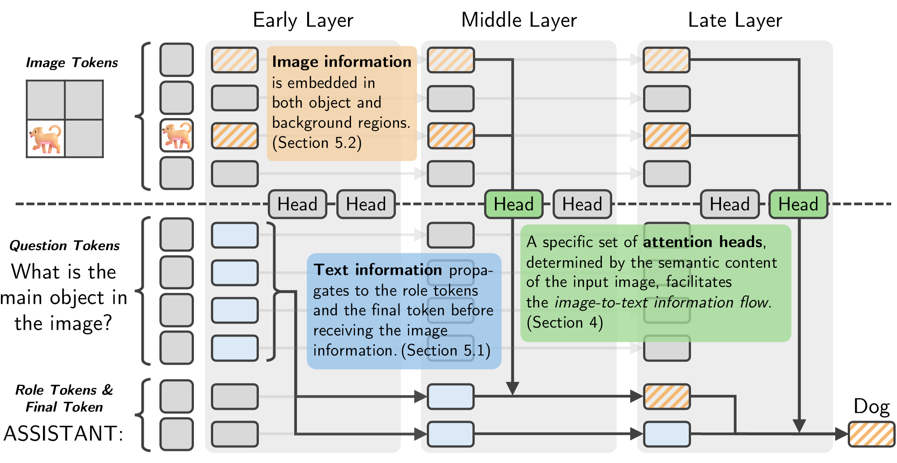
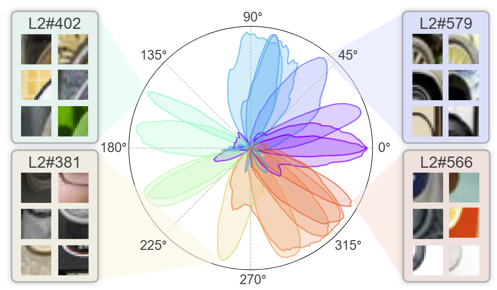
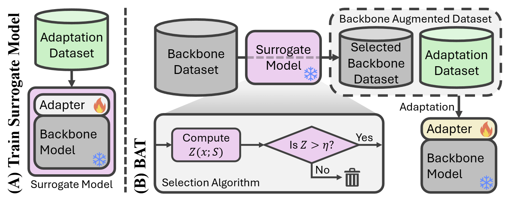
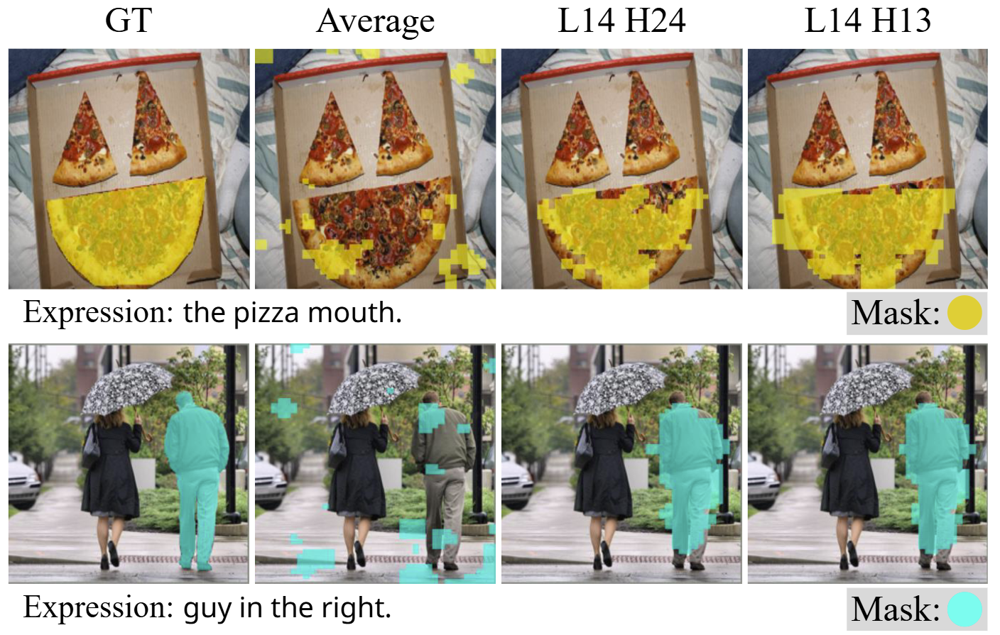
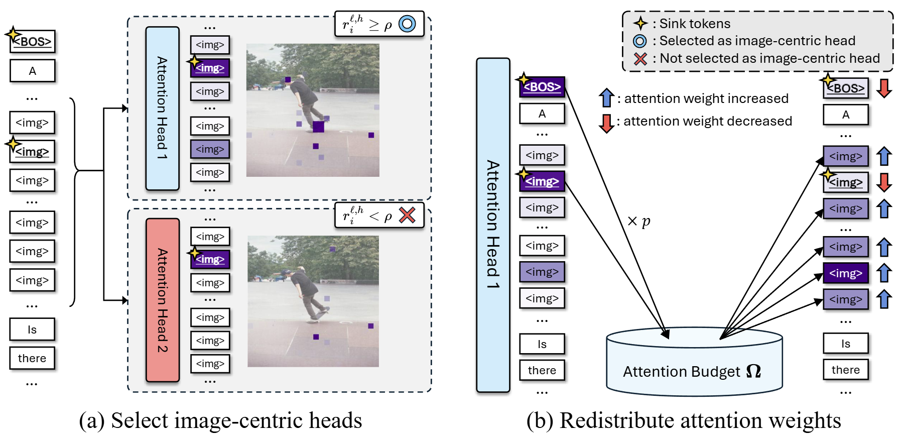
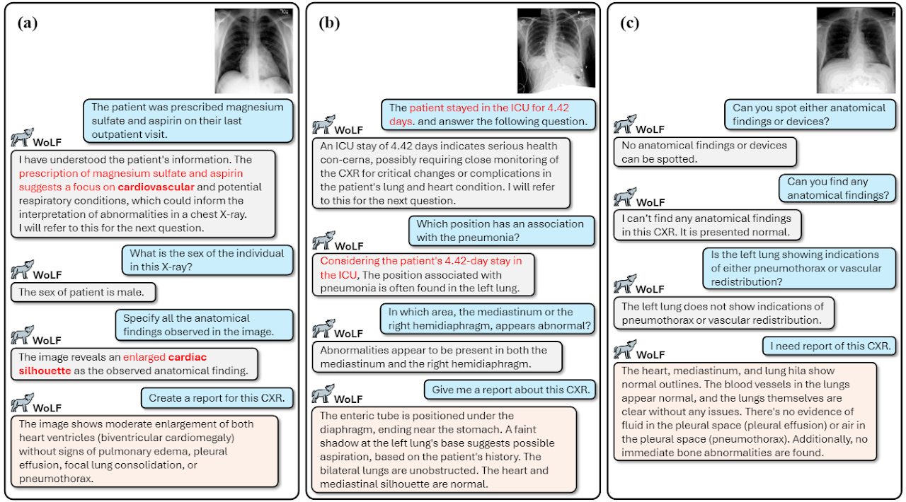

|
Junhyeok Kim
Hello! I'm a Ph.D. student at MICV Lab, and being
advised by
Prof. Seong Jae Hwang.
I'm currently interested in mechanistic interpretability, vision-language models, and a little
bit of medical imaging!
Recently, my first first-author paper, which interprets ViT features and uncovers circuits to understand the model’s underlying mechanisms, has been accepted to NeurIPS ’25.
I am actively looking for internship opportunities. Please feel free to reach out!
Email /
Scholar /
LinkedIn /
Github
|
|
Research
Currently, my primary research interest lies in Mechanistic Interpretability (MI). By leveraging MI,
we can understand what capabilities an AI model specializes in and what capabilities it requires. I
believe that this deep understanding of AI models will ultimately serve as a major foundation for
advancing towards Artificial General Intelligence (AGI).
|
|

|
Interpreting Attention Heads for Image-to-Text Information Flow in Large
Vision-Language Models
Jinyeong Kim, Seil Kang, Jiwoo Park, Junhyeok Kim, Seong Jae Hwang
NeurIPS MechInterp Workshop 2025 Spotlight!
The image-to-text transfer in LVLMs depends on specialized attention head groups that are
determined by the semantic content of the image.
|
|

|
Interpreting vision transformers via residual replacement model
Jinyeong Kim*, Junhyeok Kim*, Yumin Shim, Joohyeok Kim, Sunyoung Jung, Seong Jae
Hwang
NeurIPS 2025
Residual replacement model explains end-to-end decision-making process of vision transformers in
human-understandable scale.
|
|

|
Backbone Augmented Training for Adaptations
Jae Wan Park, Junhyeok Kim, Youngjun Jun, Hyunah Ko, Seong Jae Hwang
arXiv 2025
To solve the problem of scarce adaptation data, the pre-training data of the backbone model can be
selectively utilized to augment the adaptation dataset.
|
|

|
Your large vision-language model only needs a few attention heads for
visual grounding
Seil Kang, Jinyeong Kim, Junhyeok Kim, Seong Jae Hwang
CVPR 2025 Highlight!
A few attention heads in frozen LVLMs demonstrate strong visual grounding capabilities. These
"localization heads" immediately enable training-free detection and segmentation.
|
|

|
See what you are told: Visual attention sink in large multimodal
models
Seil Kang*, Jinyeong Kim*, Junhyeok Kim, Seong Jae Hwang
ICLR 2025
Large multimodal models consistently see irrelevant parts of the input. Our work demystifies this
phenomenon, dubbed "visual attention sink," and proposes a simple mitigation strategy.
|
|

|
WoLF: Wide-scope Large Language Model Framework for CXR
Understanding
Seil Kang, Junhyeok Kim, Donghyun Kim, Hyo Kyung Lee, Seong Jae Hwang
arXiv 2024
WOLF is a novel Large Language Model framework for Chest X-ray understanding that integrates
patient Electronic Health Records (EHR).
|
Miscellaneous
Need another Junhyeok Kim? He's just one click away! (He is my mate as well as my namesake.)
I really love music (2024).
|
This website is built based on Jon Barron's personal website.
|
|
{kind=link}
{kind=link}